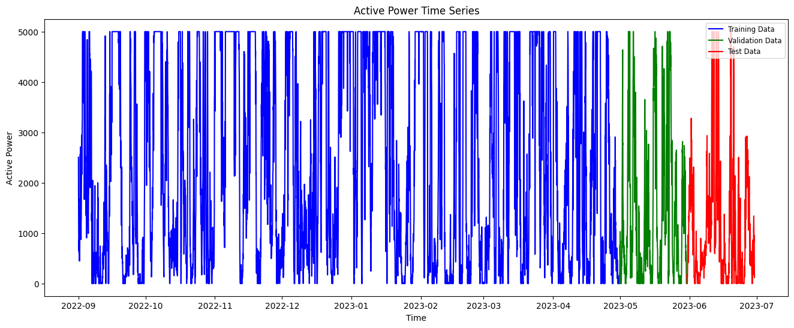
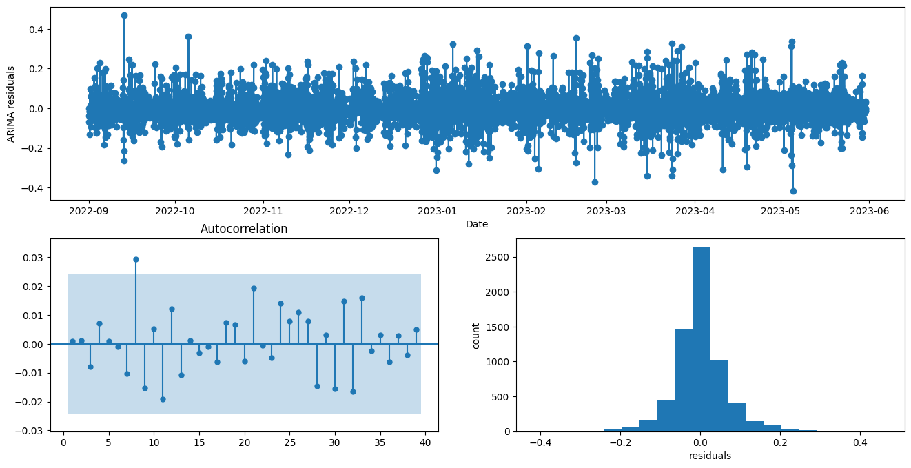
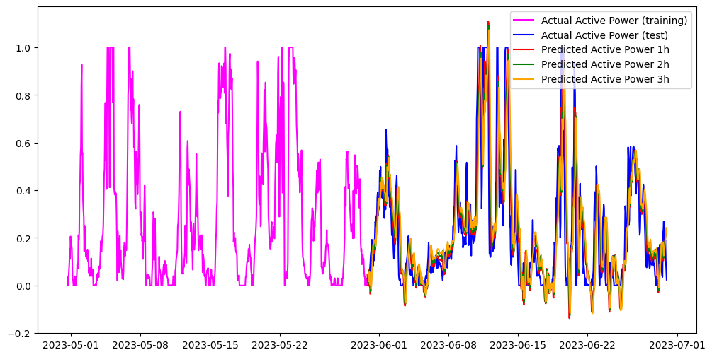

import pandas as pd
import numpy as np
import matplotlib.pyplot as plt
import time
import logging
from sklearn.preprocessing import MinMaxScaler
from sklearn.preprocessing import StandardScaler
from sklearn.model_selection import train_test_split
from sklearn.metrics import mean_absolute_error
AutoARIMA Forecasting with Nixtla’s NeuralForecast
Dataset: AV
This notebook demonstrates how to use the AutoARIMA forecasting model with the implementation provided by Nixtla’s StatsForecast library:
- for the automodel
AutoARIMA
Important note:
This notebook uses the following conda environments:
- Under linux: tfm_cc, described in the tfm_cc.yml file (see environments folder).
- Under macOS: tfm_cc_nixtla, described in the tfm_cc_nixtla.yml file (see environments folder).
Execution Notes:
The run times that appear below correspond to the execution of the notebook in a Mac M2 machine, 16GB of RAM.
Load basic libraries
Warning: Model specific libraries will be loaded below.
Load dataset
file_path = "../../data/filtered_df.csv"
df = pd.read_csv(file_path, delimiter=';')
df.head()| time | Active_Power | Wind_speed_tower | Preassure | Generator_Speed | F1_v(90).Mean | F1_v(80).Mean | F1_v(70).Mean | F1_v(60).Mean | F1_v(50).Mean | F1_v(40).Mean | F1_v(30).Mean | |
|---|---|---|---|---|---|---|---|---|---|---|---|---|
| 0 | 01/09/2022 0:00 | 2505.48220 | 9.057124 | 1012.38360 | 1121.2102 | 9.023969 | 3.97405 | 9.076108 | 3.82628 | 8.992466 | 3.39136 | 8.827003 |
| 1 | 01/09/2022 1:00 | 1762.24210 | 8.078237 | 1012.41210 | 1073.9020 | 8.110137 | 3.97405 | 8.151952 | 3.82628 | 8.076786 | 3.39136 | 8.005285 |
| 2 | 01/09/2022 2:00 | 1460.83560 | 7.712017 | 1012.29083 | 1021.2429 | 7.527431 | 3.97405 | 7.615797 | 3.82628 | 7.517593 | 3.39136 | 7.461551 |
| 3 | 01/09/2022 3:00 | 926.81006 | 6.672135 | 1012.15690 | 894.0004 | 6.566134 | 3.97405 | 6.637816 | 3.82628 | 6.571112 | 3.39136 | 6.550666 |
| 4 | 01/09/2022 4:00 | 671.34590 | 6.100095 | 1012.09424 | 821.4349 | 5.988185 | 3.97405 | 6.049537 | 3.82628 | 5.986922 | 3.39136 | 5.982606 |
Set datetime format and index
df['time'] = pd.to_datetime(df['time'], format='%d/%m/%Y %H:%M')
df.set_index('time', inplace=True)
df.head()| Active_Power | Wind_speed_tower | Preassure | Generator_Speed | F1_v(90).Mean | F1_v(80).Mean | F1_v(70).Mean | F1_v(60).Mean | F1_v(50).Mean | F1_v(40).Mean | F1_v(30).Mean | |
|---|---|---|---|---|---|---|---|---|---|---|---|
| time | |||||||||||
| 2022-09-01 00:00:00 | 2505.48220 | 9.057124 | 1012.38360 | 1121.2102 | 9.023969 | 3.97405 | 9.076108 | 3.82628 | 8.992466 | 3.39136 | 8.827003 |
| 2022-09-01 01:00:00 | 1762.24210 | 8.078237 | 1012.41210 | 1073.9020 | 8.110137 | 3.97405 | 8.151952 | 3.82628 | 8.076786 | 3.39136 | 8.005285 |
| 2022-09-01 02:00:00 | 1460.83560 | 7.712017 | 1012.29083 | 1021.2429 | 7.527431 | 3.97405 | 7.615797 | 3.82628 | 7.517593 | 3.39136 | 7.461551 |
| 2022-09-01 03:00:00 | 926.81006 | 6.672135 | 1012.15690 | 894.0004 | 6.566134 | 3.97405 | 6.637816 | 3.82628 | 6.571112 | 3.39136 | 6.550666 |
| 2022-09-01 04:00:00 | 671.34590 | 6.100095 | 1012.09424 | 821.4349 | 5.988185 | 3.97405 | 6.049537 | 3.82628 | 5.986922 | 3.39136 | 5.982606 |
df.info()<class 'pandas.core.frame.DataFrame'>
DatetimeIndex: 7248 entries, 2022-09-01 00:00:00 to 2023-06-29 23:00:00
Data columns (total 11 columns):
# Column Non-Null Count Dtype
--- ------ -------------- -----
0 Active_Power 7248 non-null float64
1 Wind_speed_tower 7248 non-null float64
2 Preassure 7248 non-null float64
3 Generator_Speed 7248 non-null float64
4 F1_v(90).Mean 7162 non-null float64
5 F1_v(80).Mean 7162 non-null float64
6 F1_v(70).Mean 7162 non-null float64
7 F1_v(60).Mean 7162 non-null float64
8 F1_v(50).Mean 7162 non-null float64
9 F1_v(40).Mean 7162 non-null float64
10 F1_v(30).Mean 7162 non-null float64
dtypes: float64(11)
memory usage: 679.5 KBIn this example, we only use the following variables:
df = df.iloc[:, :4]
df.info()<class 'pandas.core.frame.DataFrame'>
DatetimeIndex: 7248 entries, 2022-09-01 00:00:00 to 2023-06-29 23:00:00
Data columns (total 4 columns):
# Column Non-Null Count Dtype
--- ------ -------------- -----
0 Active_Power 7248 non-null float64
1 Wind_speed_tower 7248 non-null float64
2 Preassure 7248 non-null float64
3 Generator_Speed 7248 non-null float64
dtypes: float64(4)
memory usage: 283.1 KBCheck for missing values, time gaps, and duplicated dates
There are no missing data in this dataset
print(df.isna().sum())Active_Power 0
Wind_speed_tower 0
Preassure 0
Generator_Speed 0
dtype: int64duplicate_dates = df.index[df.index.duplicated(keep='first')]
print(f"Number of duplicate timestamps: {len(duplicate_dates)}")
print(duplicate_dates)Number of duplicate timestamps: 0
DatetimeIndex([], dtype='datetime64[ns]', name='time', freq=None)expected_range = pd.date_range(start=df.index.min(), end=df.index.max(), freq='h')
missing_dates = expected_range.difference(df.index)
print(f"Number of missing timestamps: {len(missing_dates)}")
print(missing_dates[:30]) # show first 10 missing onesNumber of missing timestamps: 0
DatetimeIndex([], dtype='datetime64[ns]', freq='h')Target and exogenous variables
target = 'Active_Power'
features = [col for col in df.columns if col != target]
features = features[:1]
features['Wind_speed_tower']df = df[features + [target]]
df| Wind_speed_tower | Active_Power | |
|---|---|---|
| time | ||
| 2022-09-01 00:00:00 | 9.057124 | 2505.48220 |
| 2022-09-01 01:00:00 | 8.078237 | 1762.24210 |
| 2022-09-01 02:00:00 | 7.712017 | 1460.83560 |
| 2022-09-01 03:00:00 | 6.672135 | 926.81006 |
| 2022-09-01 04:00:00 | 6.100095 | 671.34590 |
| ... | ... | ... |
| 2023-06-29 19:00:00 | 6.510803 | 843.02400 |
| 2023-06-29 20:00:00 | 6.739559 | 954.61980 |
| 2023-06-29 21:00:00 | 5.570358 | 530.78204 |
| 2023-06-29 22:00:00 | 5.017759 | 316.17050 |
| 2023-06-29 23:00:00 | 4.197770 | 118.98179 |
7248 rows × 2 columns
Train / Validation / Test split
We select the following lengths for the train, validation, and test sets:
train_len = 5800 # approx int(np.ceil(df.shape[0] * 0.8))
print(f"Train length: {train_len}")
val_len = (df.shape[0] - train_len) // 2
print(f"Validation length: {val_len}")
test_len = df.shape[0] - train_len - val_len
print(f"Test length: {test_len}")Train length: 5800
Validation length: 724
Test length: 724And we split the time series into train, validation, and test sets:
train_df = df.iloc[:train_len]
train_df| Wind_speed_tower | Active_Power | |
|---|---|---|
| time | ||
| 2022-09-01 00:00:00 | 9.057124 | 2505.482200 |
| 2022-09-01 01:00:00 | 8.078237 | 1762.242100 |
| 2022-09-01 02:00:00 | 7.712017 | 1460.835600 |
| 2022-09-01 03:00:00 | 6.672135 | 926.810060 |
| 2022-09-01 04:00:00 | 6.100095 | 671.345900 |
| ... | ... | ... |
| 2023-04-30 11:00:00 | 4.004780 | 150.152160 |
| 2023-04-30 12:00:00 | 3.007964 | 0.000000 |
| 2023-04-30 13:00:00 | 1.408475 | 8.929723 |
| 2023-04-30 14:00:00 | 1.616868 | 13.570722 |
| 2023-04-30 15:00:00 | 2.700079 | 0.000000 |
5800 rows × 2 columns
val_df = df.iloc[train_len:(train_len + val_len)]
val_df| Wind_speed_tower | Active_Power | |
|---|---|---|
| time | ||
| 2023-04-30 16:00:00 | 3.812496 | 178.24010 |
| 2023-04-30 17:00:00 | 3.483967 | 0.00000 |
| 2023-04-30 18:00:00 | 4.239082 | 147.56505 |
| 2023-04-30 19:00:00 | 4.626727 | 274.05078 |
| 2023-04-30 20:00:00 | 5.066225 | 449.61557 |
| ... | ... | ... |
| 2023-05-30 15:00:00 | 3.378462 | 0.00000 |
| 2023-05-30 16:00:00 | 3.660170 | 158.17046 |
| 2023-05-30 17:00:00 | 3.581221 | 148.18813 |
| 2023-05-30 18:00:00 | 2.826163 | 0.00000 |
| 2023-05-30 19:00:00 | 2.957112 | 0.00000 |
724 rows × 2 columns
test_df = df.iloc[(train_len + val_len):]
test_df| Wind_speed_tower | Active_Power | |
|---|---|---|
| time | ||
| 2023-05-30 20:00:00 | 3.526134 | 141.81660 |
| 2023-05-30 21:00:00 | 3.746263 | 170.12517 |
| 2023-05-30 22:00:00 | 2.346617 | 0.00000 |
| 2023-05-30 23:00:00 | 2.987464 | 0.00000 |
| 2023-05-31 00:00:00 | 3.670265 | 159.70273 |
| ... | ... | ... |
| 2023-06-29 19:00:00 | 6.510803 | 843.02400 |
| 2023-06-29 20:00:00 | 6.739559 | 954.61980 |
| 2023-06-29 21:00:00 | 5.570358 | 530.78204 |
| 2023-06-29 22:00:00 | 5.017759 | 316.17050 |
| 2023-06-29 23:00:00 | 4.197770 | 118.98179 |
724 rows × 2 columns
Time series split visualization
plt.figure(figsize=(16, 6))
plt.plot(train_df["Active_Power"], label="Training Data", color='blue')
plt.plot(val_df["Active_Power"], label="Validation Data", color='green')
plt.plot(test_df["Active_Power"], label="Test Data", color='red')
plt.title("Active Power Time Series")
plt.xlabel("Time")
plt.ylabel("Active Power")
plt.legend(fontsize='small')
We will also create copies of the train, validation, and test sets to use them later in the notebook.
train_df_original = train_df.copy()
val_df_original = val_df.copy()
test_df_original = test_df.copy()Data scaling
We apply the min-max scaler fitted to the training set to the train, validation, and test sets (to avoid data leakage).
from sklearn.preprocessing import MinMaxScaler
scaler = MinMaxScaler()
scaler.set_output(transform='pandas')
scaler.fit(train_df)
train_df = scaler.transform(train_df)
val_df = scaler.transform(val_df)
test_df = scaler.transform(test_df)Let us check the result
train_df.describe().transpose()| count | mean | std | min | 25% | 50% | 75% | max | |
|---|---|---|---|---|---|---|---|---|
| Wind_speed_tower | 5800.0 | 0.370283 | 0.181766 | 0.0 | 0.230103 | 0.341549 | 0.499679 | 1.0 |
| Active_Power | 5800.0 | 0.502231 | 0.396148 | 0.0 | 0.112238 | 0.416912 | 1.000000 | 1.0 |
Nixtla Dataset Format
Convert to NeuralForecast format (ds, y, unique_id)
train_df_nf = train_df.copy()
train_df_nf = train_df_nf.rename(columns={target: 'y'})
train_df_nf['ds'] = train_df_nf.index
train_df_nf['unique_id'] = 'series_1'Move ds and unique_id to front
train_df_nf = train_df_nf[['unique_id', 'ds', 'y'] + features]
train_df_nf| unique_id | ds | y | Wind_speed_tower | |
|---|---|---|---|---|
| time | ||||
| 2022-09-01 00:00:00 | series_1 | 2022-09-01 00:00:00 | 0.501096 | 0.372027 |
| 2022-09-01 01:00:00 | series_1 | 2022-09-01 01:00:00 | 0.352448 | 0.331578 |
| 2022-09-01 02:00:00 | series_1 | 2022-09-01 02:00:00 | 0.292167 | 0.316446 |
| 2022-09-01 03:00:00 | series_1 | 2022-09-01 03:00:00 | 0.185362 | 0.273476 |
| 2022-09-01 04:00:00 | series_1 | 2022-09-01 04:00:00 | 0.134269 | 0.249839 |
| ... | ... | ... | ... | ... |
| 2023-04-30 11:00:00 | series_1 | 2023-04-30 11:00:00 | 0.030030 | 0.163258 |
| 2023-04-30 12:00:00 | series_1 | 2023-04-30 12:00:00 | 0.000000 | 0.122068 |
| 2023-04-30 13:00:00 | series_1 | 2023-04-30 13:00:00 | 0.001786 | 0.055975 |
| 2023-04-30 14:00:00 | series_1 | 2023-04-30 14:00:00 | 0.002714 | 0.064586 |
| 2023-04-30 15:00:00 | series_1 | 2023-04-30 15:00:00 | 0.000000 | 0.109346 |
5800 rows × 4 columns
Same for validation and test sets
val_df_nf = val_df.copy()
val_df_nf = val_df_nf.rename(columns={target: 'y'})
val_df_nf['ds'] = val_df_nf.index
val_df_nf['unique_id'] = 'series_1'
val_df_nf = val_df_nf[['unique_id', 'ds', 'y'] + features]
val_df_nf| unique_id | ds | y | Wind_speed_tower | |
|---|---|---|---|---|
| time | ||||
| 2023-04-30 16:00:00 | series_1 | 2023-04-30 16:00:00 | 0.035648 | 0.155312 |
| 2023-04-30 17:00:00 | series_1 | 2023-04-30 17:00:00 | 0.000000 | 0.141737 |
| 2023-04-30 18:00:00 | series_1 | 2023-04-30 18:00:00 | 0.029513 | 0.172939 |
| 2023-04-30 19:00:00 | series_1 | 2023-04-30 19:00:00 | 0.054810 | 0.188957 |
| 2023-04-30 20:00:00 | series_1 | 2023-04-30 20:00:00 | 0.089923 | 0.207118 |
| ... | ... | ... | ... | ... |
| 2023-05-30 15:00:00 | series_1 | 2023-05-30 15:00:00 | 0.000000 | 0.137377 |
| 2023-05-30 16:00:00 | series_1 | 2023-05-30 16:00:00 | 0.031634 | 0.149018 |
| 2023-05-30 17:00:00 | series_1 | 2023-05-30 17:00:00 | 0.029638 | 0.145756 |
| 2023-05-30 18:00:00 | series_1 | 2023-05-30 18:00:00 | 0.000000 | 0.114555 |
| 2023-05-30 19:00:00 | series_1 | 2023-05-30 19:00:00 | 0.000000 | 0.119966 |
724 rows × 4 columns
test_df_nf = test_df.copy()
test_df_nf = test_df_nf.rename(columns={target: 'y'})
test_df_nf['ds'] = test_df_nf.index
test_df_nf['unique_id'] = 'series_1'
test_df_nf = test_df_nf[['unique_id', 'ds', 'y'] + features]
test_df_nf| unique_id | ds | y | Wind_speed_tower | |
|---|---|---|---|---|
| time | ||||
| 2023-05-30 20:00:00 | series_1 | 2023-05-30 20:00:00 | 0.028363 | 0.143479 |
| 2023-05-30 21:00:00 | series_1 | 2023-05-30 21:00:00 | 0.034025 | 0.152575 |
| 2023-05-30 22:00:00 | series_1 | 2023-05-30 22:00:00 | 0.000000 | 0.094740 |
| 2023-05-30 23:00:00 | series_1 | 2023-05-30 23:00:00 | 0.000000 | 0.121221 |
| 2023-05-31 00:00:00 | series_1 | 2023-05-31 00:00:00 | 0.031941 | 0.149435 |
| ... | ... | ... | ... | ... |
| 2023-06-29 19:00:00 | series_1 | 2023-06-29 19:00:00 | 0.168605 | 0.266810 |
| 2023-06-29 20:00:00 | series_1 | 2023-06-29 20:00:00 | 0.190924 | 0.276262 |
| 2023-06-29 21:00:00 | series_1 | 2023-06-29 21:00:00 | 0.106156 | 0.227949 |
| 2023-06-29 22:00:00 | series_1 | 2023-06-29 22:00:00 | 0.063234 | 0.205115 |
| 2023-06-29 23:00:00 | series_1 | 2023-06-29 23:00:00 | 0.023796 | 0.171232 |
724 rows × 4 columns
Create a joint dataset with train and validation to fit into Nixtla’s framework.
train_val_df = pd.concat([train_df_nf, val_df_nf], axis=0)
train_val_df.reset_index(drop=True, inplace=True)
train_val_df.info()<class 'pandas.core.frame.DataFrame'>
RangeIndex: 6524 entries, 0 to 6523
Data columns (total 4 columns):
# Column Non-Null Count Dtype
--- ------ -------------- -----
0 unique_id 6524 non-null object
1 ds 6524 non-null datetime64[ns]
2 y 6524 non-null float64
3 Wind_speed_tower 6524 non-null float64
dtypes: datetime64[ns](1), float64(2), object(1)
memory usage: 204.0+ KBAnd similarly a full dataset with train, validation and test sets.
full_df_nf = pd.concat([train_df_nf, val_df_nf, test_df_nf], axis=0)
full_df_nf.reset_index(drop=True, inplace=True)
full_df_nf.info()<class 'pandas.core.frame.DataFrame'>
RangeIndex: 7248 entries, 0 to 7247
Data columns (total 4 columns):
# Column Non-Null Count Dtype
--- ------ -------------- -----
0 unique_id 7248 non-null object
1 ds 7248 non-null datetime64[ns]
2 y 7248 non-null float64
3 Wind_speed_tower 7248 non-null float64
dtypes: datetime64[ns](1), float64(2), object(1)
memory usage: 226.6+ KBSet the forecast horizon and input length
horizon = 3
input_size = 6AutoARIMA
import logging
import optuna
import torch
from neuralforecast import NeuralForecast
from neuralforecast.losses.pytorch import MAECheck if CUDA is available (Linux machines)
optuna.logging.set_verbosity(optuna.logging.WARNING)
logging.getLogger('pytorch_lightning').setLevel(logging.ERROR)
torch.set_float32_matmul_precision('high')if torch.cuda.is_available():
print(torch.cuda.device_count(), torch.cuda.current_device(),torch.cuda.get_device_name(0))Define the hyperparameters for the model. The first group is fixed and shouldn’t changed from model to model. The second group is the hyperparameters that are tuned by the AutoTimeXer algorithm using Optuna as backend and may be specific to the model’s architecture. The documentations for the hyperparameters can be seen at the TimeXer and AutoTimeXer documentation.
from statsforecast.models import AutoARIMA
from statsforecast import StatsForecast
# Inicializar modelo AutoARIMA
model = StatsForecast(
models=[AutoARIMA(start_p=1, start_q=1, max_p=3, max_q=3, seasonal=False)],
freq='H',
n_jobs=1
)
modelStatsForecast(models=[AutoARIMA])sf = model.fit(df = train_val_df)
from statsforecast.arima import ARIMASummaryARIMA_model = sf.fitted_[0][0]ARIMASummary(ARIMA_model.model_)Regression with ARIMA(2,0,1) errorsARIMA_modelAutoARIMAsummaries = []
for mdl in sf.fitted_[0]:
summary_model = {
"model": mdl,
"Orders": ARIMASummary(mdl.model_),
"sigma2": mdl.model_["sigma2"],
"loglik": mdl.model_["loglik"],
"aic": mdl.model_["aic"],
"aicc": mdl.model_["aicc"],
"bic": mdl.model_["bic"],
}
summaries.append(summary_model)
pd.DataFrame(sorted(summaries, key=lambda d: d["aicc"]))| model | Orders | sigma2 | loglik | aic | aicc | bic | |
|---|---|---|---|---|---|---|---|
| 0 | AutoARIMA | Regression with ARIMA(2,0,1) errors | 0.004228 | 8574.830633 | -17137.661266 | -17137.648377 | -17096.961809 |
summary_model['Orders']Regression with ARIMA(2,0,1) errorsfrom copy import deepcopy
print(ARIMASummary(sf.fitted_[0, 0].model_))
coefs = deepcopy(sf.fitted_[0, 0].model_['coef'])
coefs["mean"] = coefs.pop("intercept")
print(f"Coefficients: {coefs}")Regression with ARIMA(2,0,1) errors
Coefficients: {'ar1': np.float64(1.5639365200960618), 'ar2': np.float64(-0.6132226984428473), 'ma1': np.float64(-0.6489949992405994), 'ex_1': np.float64(1.9783379381595654), 'mean': np.float64(-0.23307334865313575)}from statsmodels.graphics.tsaplots import plot_acf
fig = plt.figure(figsize=(16, 8))
gs = fig.add_gridspec(2, 2)
ax1 = fig.add_subplot(gs[0, :])
ax2 = fig.add_subplot(gs[1, 0])
ax3 = fig.add_subplot(gs[1, 1])
resids = sf.fitted_[0, 0].model_["residuals"]
ax1.plot(train_val_df['ds'], resids, marker="o")
ax1.set_ylabel('ARIMA residuals')
ax1.set_xlabel('Date')
plot_acf(resids, ax2, zero=False, auto_ylims=True,
bartlett_confint=False)
ax3.hist(resids, bins=20)
ax3.set_ylabel('count')
ax3.set_xlabel('residuals')
plt.show();plt.close()
full_df_nf| unique_id | ds | y | Wind_speed_tower | |
|---|---|---|---|---|
| 0 | series_1 | 2022-09-01 00:00:00 | 0.501096 | 0.372027 |
| 1 | series_1 | 2022-09-01 01:00:00 | 0.352448 | 0.331578 |
| 2 | series_1 | 2022-09-01 02:00:00 | 0.292167 | 0.316446 |
| 3 | series_1 | 2022-09-01 03:00:00 | 0.185362 | 0.273476 |
| 4 | series_1 | 2022-09-01 04:00:00 | 0.134269 | 0.249839 |
| ... | ... | ... | ... | ... |
| 7243 | series_1 | 2023-06-29 19:00:00 | 0.168605 | 0.266810 |
| 7244 | series_1 | 2023-06-29 20:00:00 | 0.190924 | 0.276262 |
| 7245 | series_1 | 2023-06-29 21:00:00 | 0.106156 | 0.227949 |
| 7246 | series_1 | 2023-06-29 22:00:00 | 0.063234 | 0.205115 |
| 7247 | series_1 | 2023-06-29 23:00:00 | 0.023796 | 0.171232 |
7248 rows × 4 columns
# The value of n moves across the test set, predicting one step at a time
# We use the first row (n = 0) of the test set to initialize the output DataFrame
n = 0 from utilsforecast.processing import make_future_dataframe
future_predictors = make_future_dataframe(
train_val_df["unique_id"].unique(),
pd.to_datetime([train_val_df["ds"].max()]),
freq="H",
h=horizon,
)
future_predictors/Users/fernando/miniconda3/envs/tfm_cc_NIXTLA/lib/python3.13/site-packages/utilsforecast/processing.py:384: FutureWarning: 'H' is deprecated and will be removed in a future version, please use 'h' instead.
freq = pd.tseries.frequencies.to_offset(freq)
/Users/fernando/miniconda3/envs/tfm_cc_NIXTLA/lib/python3.13/site-packages/utilsforecast/processing.py:440: FutureWarning: 'H' is deprecated and will be removed in a future version, please use 'h' instead.
freq = pd.tseries.frequencies.to_offset(freq)| unique_id | ds | |
|---|---|---|
| 0 | series_1 | 2023-05-30 20:00:00 |
| 1 | series_1 | 2023-05-30 21:00:00 |
| 2 | series_1 | 2023-05-30 22:00:00 |
future_predictors['Wind_speed_tower'] = [train_val_df['Wind_speed_tower'].tail(input_size).mean() for _ in range(future_predictors.shape[0])]
future_predictors| unique_id | ds | Wind_speed_tower | |
|---|---|---|---|
| 0 | series_1 | 2023-05-30 20:00:00 | 0.14096 |
| 1 | series_1 | 2023-05-30 21:00:00 | 0.14096 |
| 2 | series_1 | 2023-05-30 22:00:00 | 0.14096 |
forecast = sf.predict(h=3, X_df=future_predictors)
forecast/Users/fernando/miniconda3/envs/tfm_cc_NIXTLA/lib/python3.13/site-packages/utilsforecast/processing.py:384: FutureWarning: 'H' is deprecated and will be removed in a future version, please use 'h' instead.
freq = pd.tseries.frequencies.to_offset(freq)
/Users/fernando/miniconda3/envs/tfm_cc_NIXTLA/lib/python3.13/site-packages/utilsforecast/processing.py:440: FutureWarning: 'H' is deprecated and will be removed in a future version, please use 'h' instead.
freq = pd.tseries.frequencies.to_offset(freq)| unique_id | ds | AutoARIMA | |
|---|---|---|---|
| 0 | series_1 | 2023-05-30 20:00:00 | 0.043475 |
| 1 | series_1 | 2023-05-30 21:00:00 | 0.044780 |
| 2 | series_1 | 2023-05-30 22:00:00 | 0.045631 |
Now we create a dictionary (of dataframes) to store the predictions for each value k from 1 to the max of the prediction horizon. The weird (k-1):k bit below is to prevent pandas from collapsing the row into a series!
ARIMA_dict = {}
for h in range(1, horizon + 1):
# for h in range(1, 2):
# Initialize the dictionary to store models and parameters for each horizon
ARIMA_dict[f'{h}h'] = {'preds': forecast.iloc[(h - 1):h, :]}
ARIMA_dict['2h']['preds']| unique_id | ds | AutoARIMA | |
|---|---|---|---|
| 1 | series_1 | 2023-05-30 21:00:00 | 0.04478 |
%%capture
start_time = time.time()
# This loop iterates over the remaining rows of the test set, predicting one step at a time
# using the same steps
# for n in range(1, 10):
for n in range(1, test_df_nf.shape[0] - h + 1):
print(f"Processing row {n} of the test set")
train_val_df_n = full_df_nf.head(train_val_df.shape[0] + n).copy()
sf_n = model.fit(df = train_val_df_n)
future_predictors = make_future_dataframe(
train_val_df_n["unique_id"].unique(),
pd.to_datetime([train_val_df_n["ds"].max()]),
freq="H",
h=horizon,
)
future_predictors['Wind_speed_tower'] = [train_val_df_n['Wind_speed_tower'].tail(input_size).mean() for _ in range(future_predictors.shape[0])]
forecast = sf.predict(h=3, X_df=future_predictors)
for h in range(1, horizon + 1):
ARIMA_dict[f'{h}h']['preds'] = pd.concat([ARIMA_dict[f'{h}h']['preds'], forecast.iloc[(h - 1):h, :]], axis=0)
ARIMA_dict[f'{h}h'][f'model_{n}'] = sf_n.fitted_[0, 0].model_
# future_predictors
# forecast
# ARIMA_dict['2h']['preds']
end_time = time.time()
elapsed_time = end_time - start_time print(f"Elapsed time: {elapsed_time:.2f} seconds")Elapsed time: 4387.38 secondsModel Performance Evaluation
Let us also look at the prediction dataframes for the ARIMAoost models for each prediction horizon.
preds_df = {}preds_df['1h'] = ARIMA_dict['1h']['preds'].set_index('ds').rename(columns={'AutoARIMA': 'pred_1h'})
preds_df['1h']| unique_id | pred_1h | |
|---|---|---|
| ds | ||
| 2023-05-30 20:00:00 | series_1 | 0.043475 |
| 2023-05-30 21:00:00 | series_1 | 0.014647 |
| 2023-05-30 22:00:00 | series_1 | 0.008416 |
| 2023-05-30 23:00:00 | series_1 | 0.064358 |
| 2023-05-31 00:00:00 | series_1 | 0.006961 |
| ... | ... | ... |
| 2023-06-29 17:00:00 | series_1 | 0.155737 |
| 2023-06-29 18:00:00 | series_1 | 0.169069 |
| 2023-06-29 19:00:00 | series_1 | 0.187468 |
| 2023-06-29 20:00:00 | series_1 | 0.214191 |
| 2023-06-29 21:00:00 | series_1 | 0.213948 |
722 rows × 2 columns
preds_df['2h'] = ARIMA_dict['2h']['preds'].set_index('ds').rename(columns={'AutoARIMA': 'pred_2h'})
preds_df['2h']| unique_id | pred_2h | |
|---|---|---|
| ds | ||
| 2023-05-30 21:00:00 | series_1 | 0.044780 |
| 2023-05-30 22:00:00 | series_1 | 0.017447 |
| 2023-05-30 23:00:00 | series_1 | 0.012439 |
| 2023-05-31 00:00:00 | series_1 | 0.060742 |
| 2023-05-31 01:00:00 | series_1 | 0.007650 |
| ... | ... | ... |
| 2023-06-29 18:00:00 | series_1 | 0.167404 |
| 2023-06-29 19:00:00 | series_1 | 0.182423 |
| 2023-06-29 20:00:00 | series_1 | 0.201999 |
| 2023-06-29 21:00:00 | series_1 | 0.229163 |
| 2023-06-29 22:00:00 | series_1 | 0.228735 |
722 rows × 2 columns
preds_df['3h'] = ARIMA_dict['3h']['preds'].set_index('ds').rename(columns={'AutoARIMA': 'pred_3h'})
preds_df['3h']| unique_id | pred_3h | |
|---|---|---|
| ds | ||
| 2023-05-30 22:00:00 | series_1 | 0.045631 |
| 2023-05-30 23:00:00 | series_1 | 0.019982 |
| 2023-05-31 00:00:00 | series_1 | 0.016216 |
| 2023-05-31 01:00:00 | series_1 | 0.056582 |
| 2023-05-31 02:00:00 | series_1 | 0.008345 |
| ... | ... | ... |
| 2023-06-29 19:00:00 | series_1 | 0.177721 |
| 2023-06-29 20:00:00 | series_1 | 0.194555 |
| 2023-06-29 21:00:00 | series_1 | 0.215259 |
| 2023-06-29 22:00:00 | series_1 | 0.242745 |
| 2023-06-29 23:00:00 | series_1 | 0.242025 |
722 rows × 2 columns
And let us plot the predictions of the ARIMAoost models for each prediction horizon.
%matplotlib inline
plt.figure(figsize=(12, 6))
plt.plot(val_df_nf["y"], label="Actual Active Power (training)", color='magenta')
plt.plot(test_df_nf["y"], label="Actual Active Power (test)", color='blue')
for h in range(1, horizon + 1):
colors = ['red', 'green', 'orange', 'purple', 'brown', 'cyan']
plt.plot(
preds_df[f'{h}h'][f'pred_{h}h'],
label=f"Predicted Active Power {h}h",
color=colors[(h - 1) % len(colors)]
)
plt.legend()
plt.show();plt.close()
MAE computation
We will next compute the MAE for each of the predictions in the dictionary.
from sklearn.metrics import mean_absolute_errorMae for 1h preddictions
mae1h_df = preds_df['1h'].copy()[['pred_1h']]
mae1h_df| pred_1h | |
|---|---|
| ds | |
| 2023-05-30 20:00:00 | 0.043475 |
| 2023-05-30 21:00:00 | 0.014647 |
| 2023-05-30 22:00:00 | 0.008416 |
| 2023-05-30 23:00:00 | 0.064358 |
| 2023-05-31 00:00:00 | 0.006961 |
| ... | ... |
| 2023-06-29 17:00:00 | 0.155737 |
| 2023-06-29 18:00:00 | 0.169069 |
| 2023-06-29 19:00:00 | 0.187468 |
| 2023-06-29 20:00:00 | 0.214191 |
| 2023-06-29 21:00:00 | 0.213948 |
722 rows × 1 columns
We need to add the exogenous variables as they were used by the scaler.
mae1h_df.insert(0, 'Wind_speed_tower', test_df_nf['Wind_speed_tower'].values[:-2])
mae1h_df| Wind_speed_tower | pred_1h | |
|---|---|---|
| ds | ||
| 2023-05-30 20:00:00 | 0.143479 | 0.043475 |
| 2023-05-30 21:00:00 | 0.152575 | 0.014647 |
| 2023-05-30 22:00:00 | 0.094740 | 0.008416 |
| 2023-05-30 23:00:00 | 0.121221 | 0.064358 |
| 2023-05-31 00:00:00 | 0.149435 | 0.006961 |
| ... | ... | ... |
| 2023-06-29 17:00:00 | 0.284871 | 0.155737 |
| 2023-06-29 18:00:00 | 0.262979 | 0.169069 |
| 2023-06-29 19:00:00 | 0.266810 | 0.187468 |
| 2023-06-29 20:00:00 | 0.276262 | 0.214191 |
| 2023-06-29 21:00:00 | 0.227949 | 0.213948 |
722 rows × 2 columns
# mae1h_df.columns = ["Wind_speed_tower", "Active_Power"]
mean_absolute_error(scaler.inverse_transform(mae1h_df)[:,1], test_df_original["Active_Power"][:-2])464.4386864793Mae for 2h preddictions
mae2h_df = preds_df['2h'].copy()[['pred_2h']]
mae2h_df| pred_2h | |
|---|---|
| ds | |
| 2023-05-30 21:00:00 | 0.044780 |
| 2023-05-30 22:00:00 | 0.017447 |
| 2023-05-30 23:00:00 | 0.012439 |
| 2023-05-31 00:00:00 | 0.060742 |
| 2023-05-31 01:00:00 | 0.007650 |
| ... | ... |
| 2023-06-29 18:00:00 | 0.167404 |
| 2023-06-29 19:00:00 | 0.182423 |
| 2023-06-29 20:00:00 | 0.201999 |
| 2023-06-29 21:00:00 | 0.229163 |
| 2023-06-29 22:00:00 | 0.228735 |
722 rows × 1 columns
mae2h_df.insert(0, 'Wind_speed_tower', test_df_nf['Wind_speed_tower'].values[:-2])
mae2h_df| Wind_speed_tower | pred_2h | |
|---|---|---|
| ds | ||
| 2023-05-30 21:00:00 | 0.143479 | 0.044780 |
| 2023-05-30 22:00:00 | 0.152575 | 0.017447 |
| 2023-05-30 23:00:00 | 0.094740 | 0.012439 |
| 2023-05-31 00:00:00 | 0.121221 | 0.060742 |
| 2023-05-31 01:00:00 | 0.149435 | 0.007650 |
| ... | ... | ... |
| 2023-06-29 18:00:00 | 0.284871 | 0.167404 |
| 2023-06-29 19:00:00 | 0.262979 | 0.182423 |
| 2023-06-29 20:00:00 | 0.266810 | 0.201999 |
| 2023-06-29 21:00:00 | 0.276262 | 0.229163 |
| 2023-06-29 22:00:00 | 0.227949 | 0.228735 |
722 rows × 2 columns
# mae1h_df.columns = ["Wind_speed_tower", "Active_Power"]
mean_absolute_error(scaler.inverse_transform(mae2h_df)[:,1], test_df_original["Active_Power"][:-2])471.5039853062987Mae for 3h preddictions
mae3h_df = preds_df['3h'].copy()[['pred_3h']]
mae3h_df| pred_3h | |
|---|---|
| ds | |
| 2023-05-30 22:00:00 | 0.045631 |
| 2023-05-30 23:00:00 | 0.019982 |
| 2023-05-31 00:00:00 | 0.016216 |
| 2023-05-31 01:00:00 | 0.056582 |
| 2023-05-31 02:00:00 | 0.008345 |
| ... | ... |
| 2023-06-29 19:00:00 | 0.177721 |
| 2023-06-29 20:00:00 | 0.194555 |
| 2023-06-29 21:00:00 | 0.215259 |
| 2023-06-29 22:00:00 | 0.242745 |
| 2023-06-29 23:00:00 | 0.242025 |
722 rows × 1 columns
mae3h_df.insert(0, 'Wind_speed_tower', test_df_nf['Wind_speed_tower'].values[:-2])
mae3h_df| Wind_speed_tower | pred_3h | |
|---|---|---|
| ds | ||
| 2023-05-30 22:00:00 | 0.143479 | 0.045631 |
| 2023-05-30 23:00:00 | 0.152575 | 0.019982 |
| 2023-05-31 00:00:00 | 0.094740 | 0.016216 |
| 2023-05-31 01:00:00 | 0.121221 | 0.056582 |
| 2023-05-31 02:00:00 | 0.149435 | 0.008345 |
| ... | ... | ... |
| 2023-06-29 19:00:00 | 0.284871 | 0.177721 |
| 2023-06-29 20:00:00 | 0.262979 | 0.194555 |
| 2023-06-29 21:00:00 | 0.266810 | 0.215259 |
| 2023-06-29 22:00:00 | 0.276262 | 0.242745 |
| 2023-06-29 23:00:00 | 0.227949 | 0.242025 |
722 rows × 2 columns
mean_absolute_error(scaler.inverse_transform(mae3h_df)[:,1], test_df_original["Active_Power"][:-2])482.91945701908855